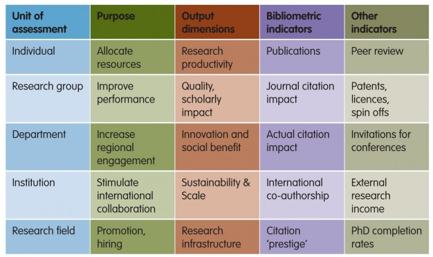
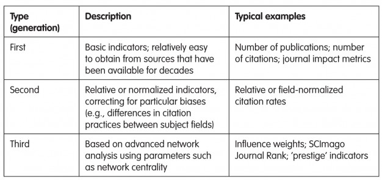
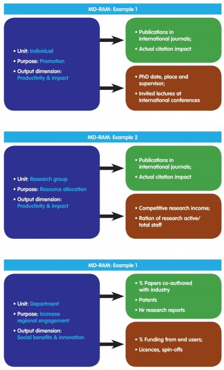

The multi-dimensional research assessment matrix
Research performance can be assessed along a number of different dimensions. In this article, we explore the notion of the multi-dimensional research assessment matrix, which was introduced in a report published in 2010 by an Expert Group on the Assessment of University-Based Research (AUBR), installed by the European Commission. Figure 1 presents a part of this matrix.
Research assessment is a complicated business. To design a practical, informative process requires making decisions about which methodology should be used, which indicators calculated, and which data collected. These decisions in turn reflect answers to a number of questions about the scope and purpose of the research assessment process in hand. A thorough exploration of many of these questions has been presented in Moed (2005).

Table 1 — The multi-dimensional research assessment matrix. This table presents a core part of the matrix, not the entire matrix. It aims to illustrate what the matrix looks like. It should be read column-wise: each column represents a different dimension. See AUBR (2010) for more information.
What, how, and why?
A fundamental question is the unit of the assessment: is it a country, institution, research group, individual, research field or an international network? Another basic question revolves around the purpose of the assessment: is it to inform the allocation of research funding, to improve performance, or to increase regional engagement? Then there are questions about which output dimensions should be considered: scholarly impact, innovation and social benefit, or sustainability?
The matrix distinguishes four assessment methodologies: i) peer review, which provides a judgment based on expert knowledge; ii) end-user reviews, such as customer satisfaction; iii) quantitative indicators, including bibliometric and other types of measures; and iv) self evaluation. These four methodologies can be — and often are — combined into a multi-dimensional assessment.
Bibliometric indicators have a central role in research assessment systems, and the main types are listed in Table 1. Table 2 distinguishes three generations of such indicators. Typical examples from each generation are: the Thomson Reuters journal impact factor; relative or field-normalized citation rates; and citation impact indicators giving citations from ‘top’ journals a higher weight than citations from more peripheral publications. These examples and others are explored in the boxed text.

Table 2 — Types of bibliometric indicators.
Table 1 also lists typical examples of non-bibliometric indicators. These include knowledge transfer activities reflected in the number of patents, licenses and spin offs; invited lectures at international conferences; the amount of external funding; Ph.D. completion rates; and the share of research-active staff relative to total staff.
The unit of assessment, the purpose of the assessment, and the output dimension considered determine the type of indicators to be used in the assessment. One indicator can by highly useful within one assessment context, but less so in another. This is illustrated in three examples presented in Figure 1.

Figure 1 – Three examples from the multi-dimensional research assessment matrix (MD-RAM) showing how the unit of assessment, purpose of the assessment, and output dimension determine the type of indicators to be used.
Entering the Matrix
The concept of multi-dimensionality of research performance, and the notion that the choice as to which indicators one applies is determined by the questions to be addressed and aspects to be assessed, is also clearly expressed in the recent “Knowledge, Networks and Nations” report from the Royal Society (Royal Society (2011), pp. 24-25):
“In the UK, the impact and excellence agenda has developed rapidly in recent years. The Research Assessment Exercise, a peer review based benchmarking exercise which measured the relative research strengths of university departments, is due to be replaced with a new Research Excellence Framework, which will be completed in 2014. The UK Research Councils now (somewhat controversially) ask all applicants to describe the potential economic and societal impacts of their research. The Excellence in Research for Australia (ERA) initiative assesses research quality within Australia’s higher education institutions using a combination of indicators and expert review by committees comprising experienced, internationally recognised experts."
The impact agenda is increasingly important for national and international science (in Europe, the Commissioner for Research, Innovation and Science has spoken about the need for a Europe-wide ‘innovation indicator’). The challenge of measuring the value of science in a number of ways faces all of the scientific community. Achieving this will offer new insights into how we appraise the quality of science, and the impacts of its globalisation.”
Exploring the indicators
- Journal Impact Factors. The Thomson Reuters Journal Impact Factor was originally invented by Eugene Garfield to expand the coverage of his Science Citation Index with the most useful journals, but is nowadays often used in many types of research assessment processes. It is defined as the average number of citations in a particular year to documents published in a journal in the two preceding years.
- Relative citation rates. The relative, field-normalised citation rate is based on the notion that citation frequencies differ significantly between subject fields. For instance, authors in molecular biology publish more frequently and cite each other more often than do authors in mathematics. In its simplest form the indicator is defined as the average citation rate of a unit’s papers divided by the world citation average in the subject fields in which the unit is active.
- Influence weights. Pinski and Narin (1976) developed an important methodology for determining citation-based influence measures of scientific journals and (sub-)disciplines. One of their methodology’s key elements is that it assigns a higher weight to citations from a prestigious journal than to a citation from a less prestigious or peripheral journal.
- Google PageRank. Pinski and Narin’s ideas also underlie Google’s measure of PageRank. The “value” of a web page is measured by the number of other web pages linking to it, but in this value assessment links from pages that are themselves frequently linked to have a higher weight than links from those to which only few other pages have linked.
- Other studies. Similar notions may play an important role in the further development of citation impact measures. Good examples are the work by Bollen et al. (2006) on journal status, and the Scimago Journal Rank (SJR) developed by the SCImago group (González-Pereira et al., 2010), one of the two journal metrics included into Scopus.
References:
AUBR (2010). Expert Group on the Assessment of University-Based Research. Assessing Europe’s University-Based Research. European Commission – DG Research. http://ec.europa.eu/research/era/docs/en/areas-of-actions-universities-assessing-europe-university-based-research-2010-en.pdf
Bollen J., Rodriguez, M.A., Van De Sompel, H. (2006). Journal status. Scientometrics, Vol. 69, pp. 669-687.
González-Pereira, B., Guerrero-Bote, V.P., Moya-Anegón, F. (2010). A new approach to the metric of journals’ scientific prestige: The SJR indicator. Journal of Informetrics, Vol. 4, pp. 379-391
Moed, H.F. (2005). Citation Analysis in Research Evaluation. Dordrecht (Netherlands): Springer. ISBN 1-4020-3713-9, 346 pp.
Pinski, G., Narin, F. (1976). Citation influence for journal aggregates of scientific publications: theory, with application to the literature of physics. Information Processing and Management, Vol. 12, pp. 297–312.
Royal Society (2011). “Knowledge, Networks and Nations: Global scientific collaboration in the 21st century”. http://royalsociety.org/policy/reports/knowledge-networks-nations
2 Responses